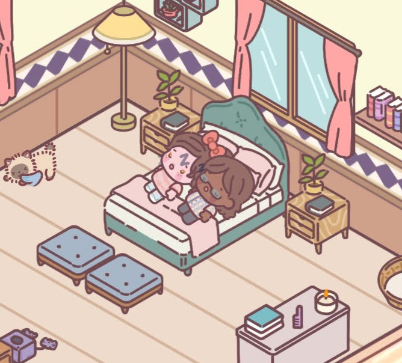
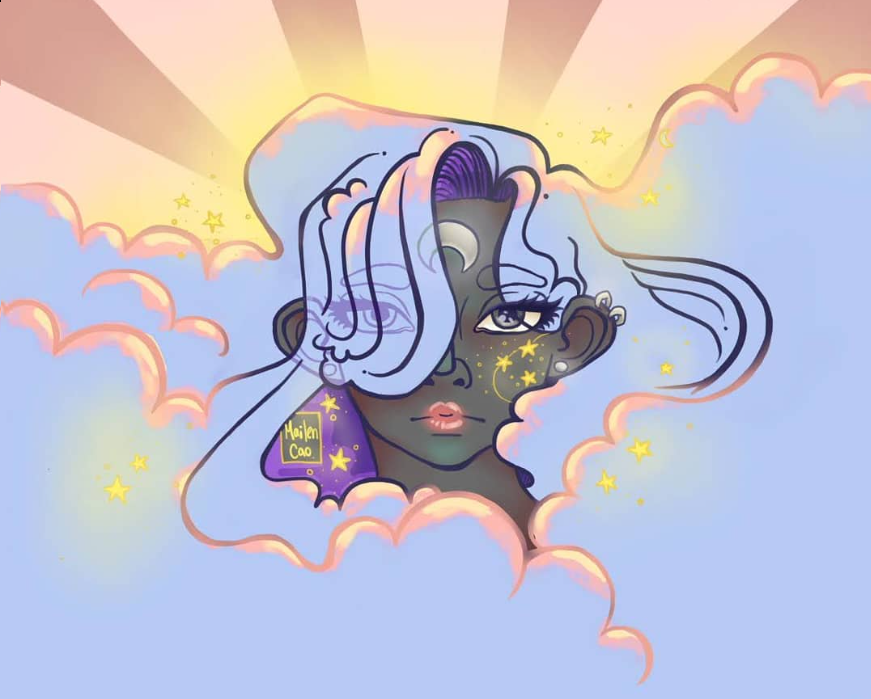
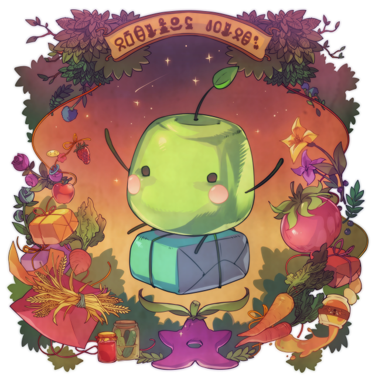
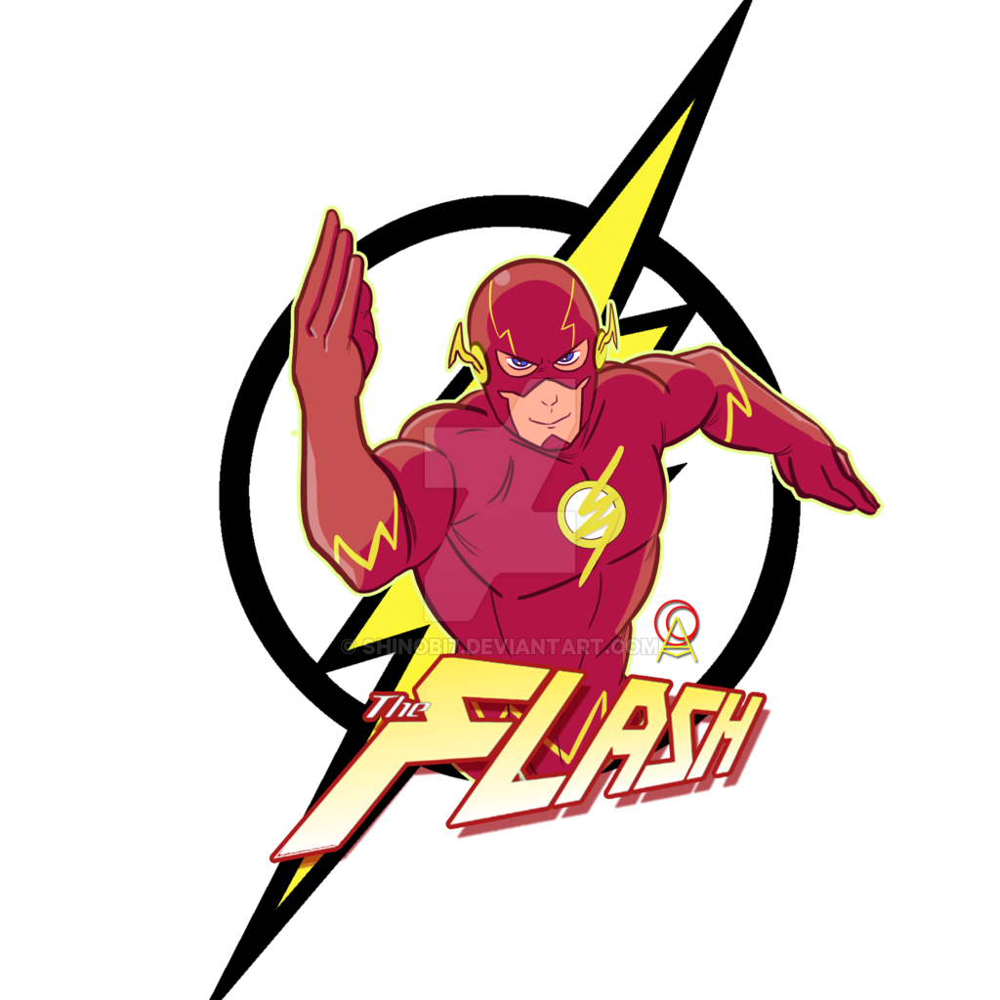
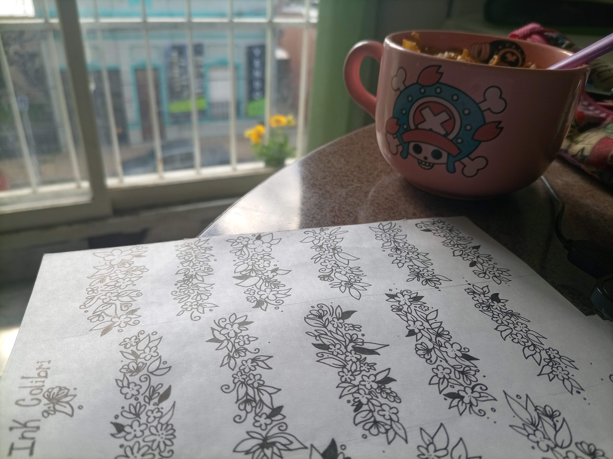

¿Donde vivo?
Stanta Clara del Mar

Actualmente vivo en Santa Clara del mar. Me mude de Tandil (donde vivi 8 años) a la costa con mi pareja y mis dos gatitos, hace unos meses.
Mi familia

Somos 5 en mi casa, mi pareja, dos gatos (Queen y fry) y el pequeño destructor de mundos, Chó (su nombre significa perro en vietnamita).
Dibujo
lo que amo
Es una actividad que hago desde que tengo memoria, no tengo nivel profesional, solo me encanta; dibujo en tradicional y digital.
Mi juego preferido
Stardew Valley
Este es un juego de administración de recursos, creado por Eric Barone, en su totalidad. Ademas de tener preferencia por los juego de administración y/o simulación este juego me encanta por ser echo con tanto amor, lleno de detalles, historias, actividades, eventos, etc.
Mi personaje preferido de Comics
Flash
Barry Allen, científico forense de la policía de Central City, el personaje DC con más peso en las historia de sus universos, donde su ausencia anuncia el fin de la liga y sus valores de libertad y justicia, súper recomendable ver “The Flashpoint paradox”
Estudios
Y cosas que me gusta hacer
Me forme en diversas áreas, muchas artísticas, entre algunas estudie maquillaje artístico y profesional, inicie las carreras de licenciatura y profesorado en teatro (en la UNICEN, Tandil), gastronomía, cursos de tatuaje, diseño multimedia básico y algunas cosas mas